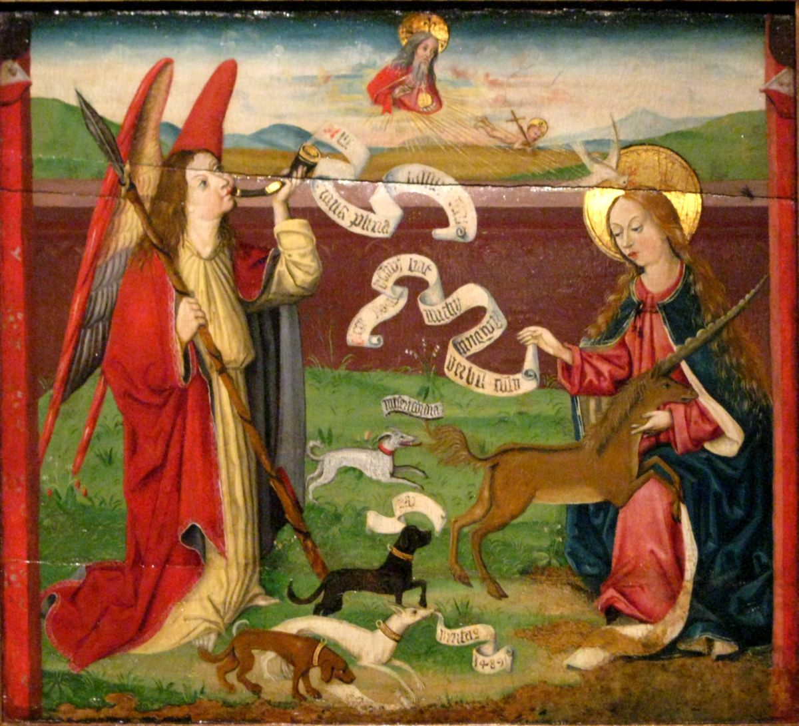
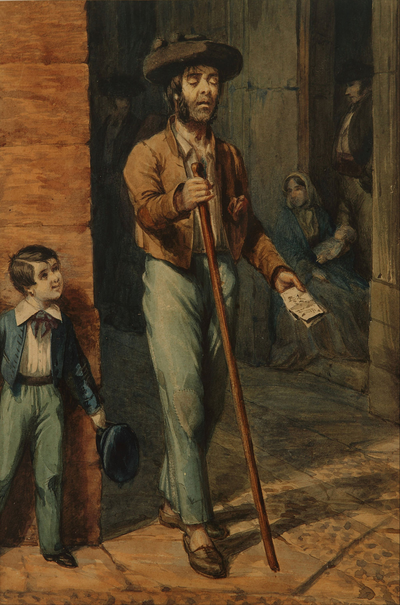

Top 10 opere de arta din restaurantul nostru
- The Scream
by Edvard Munch

- The Mystic Hunt of the Unicorn
by Martin Schongauer

- Ciego popular en Cádiz
by Prilidiano Pueyrredón

- Gioconda
by Leonardo da Vinci

- Tema Peisaj
by Purcaras Paul-Vasile
Tema Peisaj
by Edvard Munch
by Martin Schongauer
by Prilidiano Pueyrredón
by Leonardo da Vinci
by Purcaras Paul-Vasile